A l' Ecole
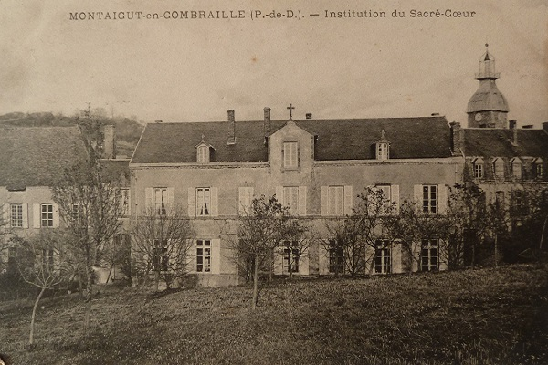
Pour Augustine et Léa, les années d'avant-guerre sont les années d'école primaire. Elles sont encore petites et sans-doute fredonnent-elles A la Clairefontaine. Comme leurs frères sont allés à l'école des Frères à Marcillat, elles vont à l'école des Soeurs à Montaigut : l'Institut du Sacré-Coeur.
En terre des Combrailles, l'Eglise a une forte emprise et ce n'est pas à l'école communale que les paysans envoient les enfants. L'éducation prodiguée par les Soeurs est stricte et sans compromis, la discipline est forte et les valeurs morales et religieuses occupent la première place. Et n'oublions pas que les deux soeurs jumelles sont en pensionat comme tous les élèves - à vol d'oiseau, Montaigut n'est pas loin du hameau des Raynauds mais avec des sabottes aux pieds, sur des chemins de terre, au petit matin frileux où à la tombée de la nuit, on ne peut pas faire ce trajet tous les jours.
Fort heureusement, Léa a gardé précieusement quelques'uns des ses cahiers et des cahiers d'Augustine, avec deux livres d'école. Oubliés pendant des années dans le grenier de la ferme, c'est avec émotion qu'on les feuillete aujourd'hui ...
Mais avant de feuilleter ces cahiers et ces livres, songeons un instant à ce qu'ils représentent pour nos deux petites paysannes. Ces cahiers font toute leur fierté, leur fierté d'apprendre à lire et à écrire en bon français - à la maison, on parle en patois et sans doute les aieux savent-ils à peine lire et écrire. Ces livres, c'est peut-être les seuls livres à la maison. Alors oui, c'est précieux !
Le premier livre, c'est l'Histoire de France. Un bel ouvrage, et à bien des égards, un véritable livre d'histoires - on dit d'ailleurs qu'à l'époque les livres d'école était souvent lus à la veillée. Tout y est et avec de beaux dessins : Vercingétorix et la bataille de Gergovie, Roland et Durandal à Roncevaux, Bernard Passy brûlant ses meubles pour découvrir la céramique, Croquants et bête du Gevaudan, Napoléon tirant l'oreille des ses grognards ...
Avec beaucoup de foi dans l'avenir, on y parle aussi des progrès plus récents de la science et d'inventions formidables : le téléphone, l'electricité ...
On y évoque également l'histoire plus récente en entretenant l'espoir qu'Alsace et Lorraine reviendront dans le giron de la France. Et déjà plane la menace d'un conflit avec l'Allemagne ...
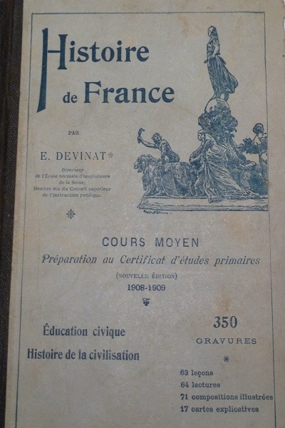
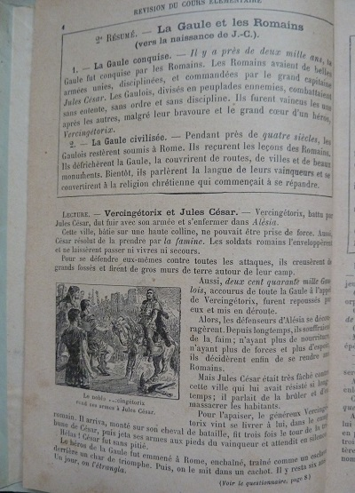

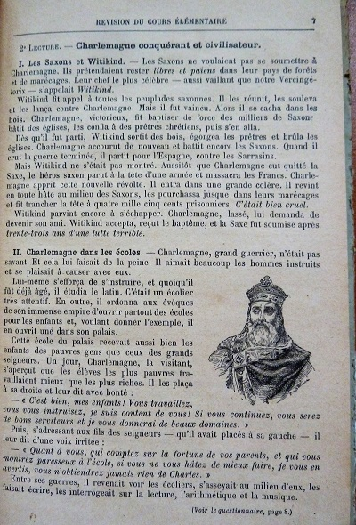
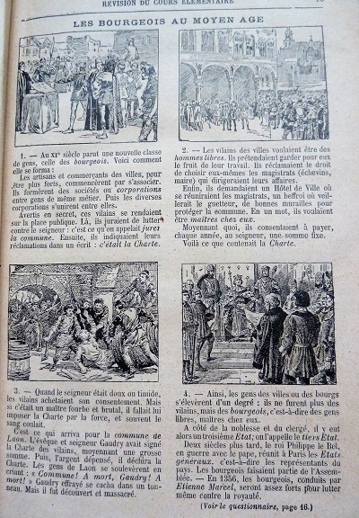
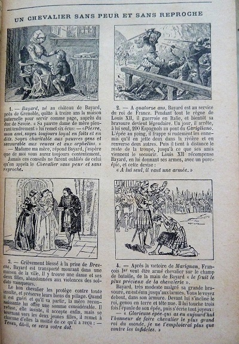
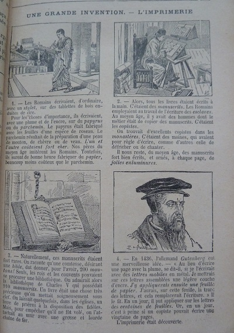
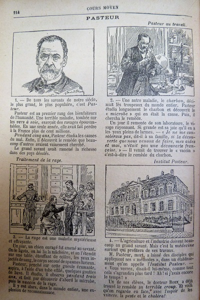
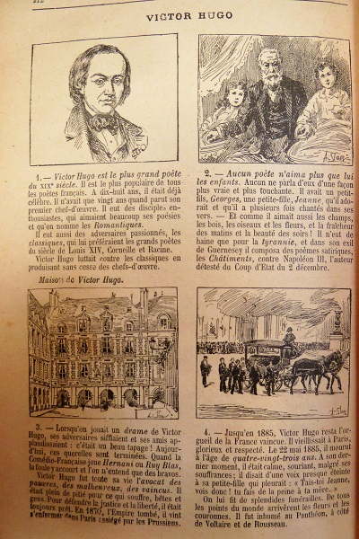
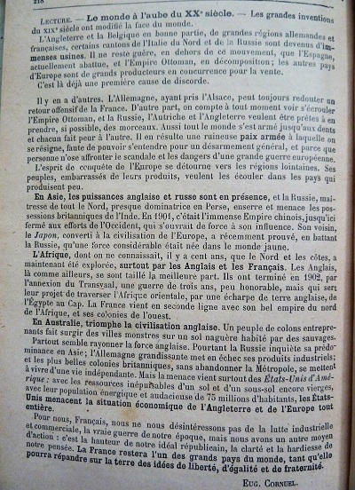
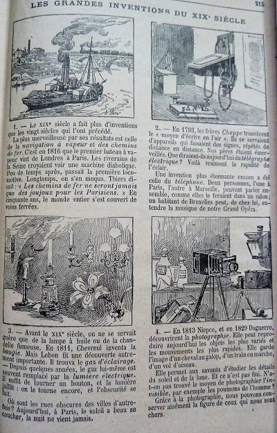
C'est cette vision de la France que frères et soeurs ont en tête : une France bonne, sûre d'elle et de sa mission civilisatrice, une France pour laquelle on doit être prêt à se sacrifier.C'est armés avec ses idées et valeurs que les trois frères partiront avec la guerre, et avec, à tort ou à raison, cette sorte de respect pathologique pour ceux qui sont plus instruits que soi. Cela est bien différent d'aujourd'hui et avec des régiments entiers fondus au même moule, il était sans doute facile de maintenir la displine dans l'armée
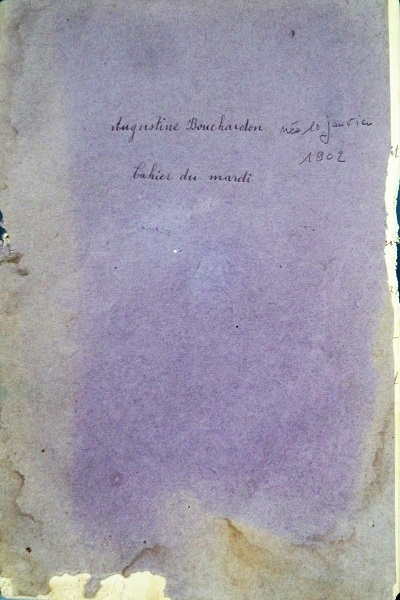
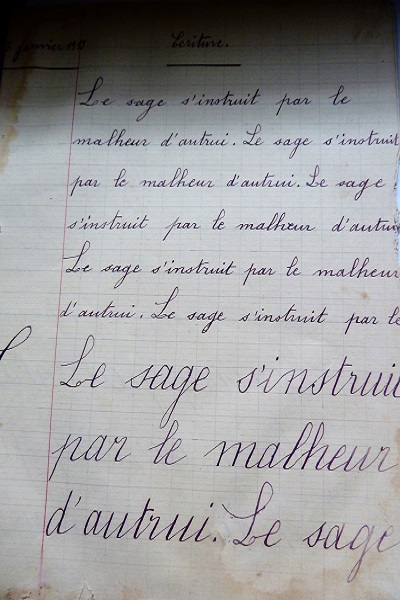
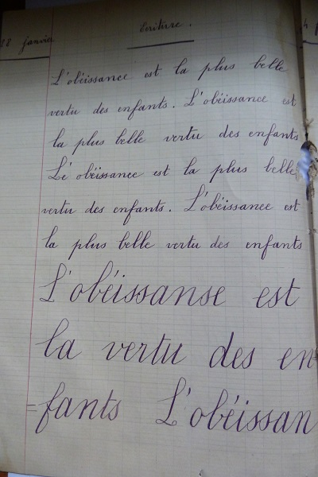
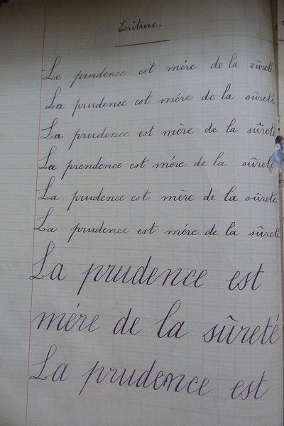
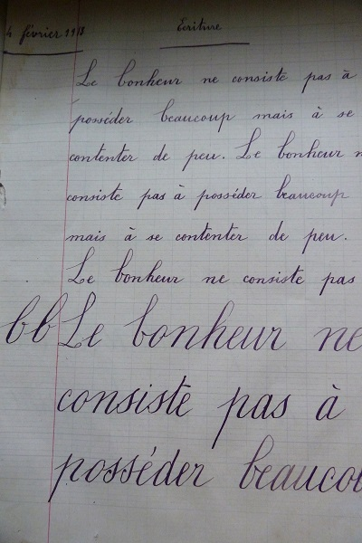
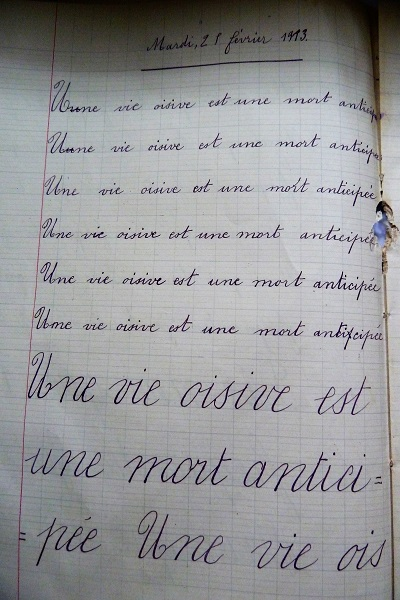
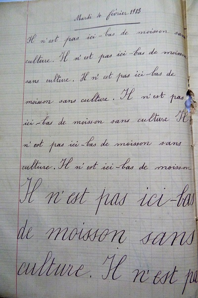
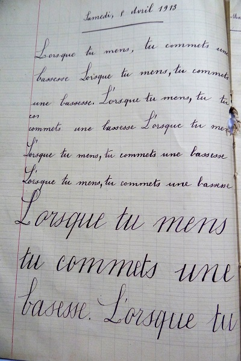
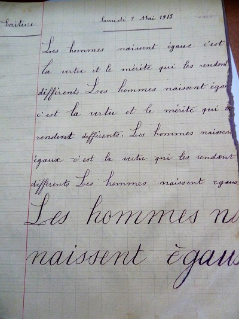
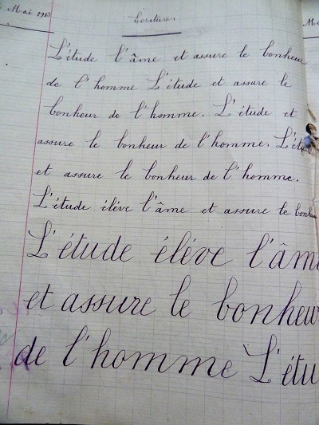
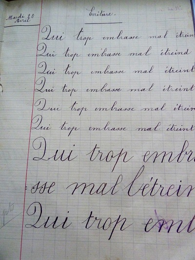
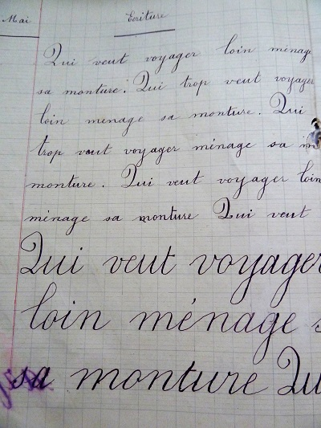
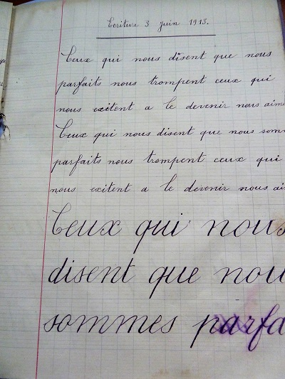
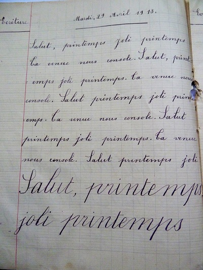
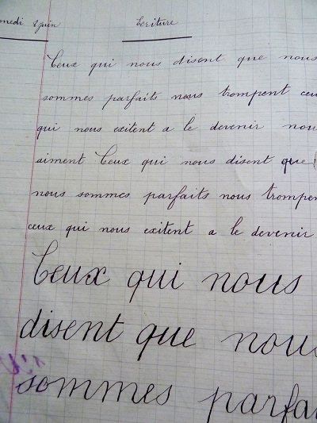
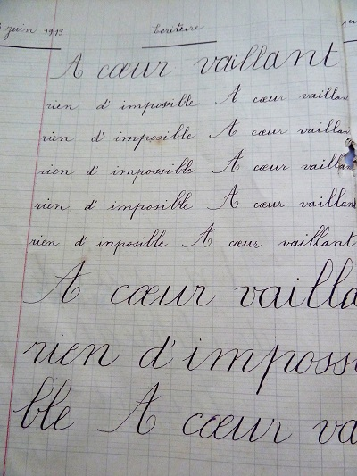
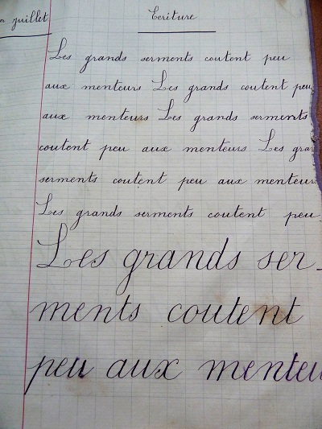
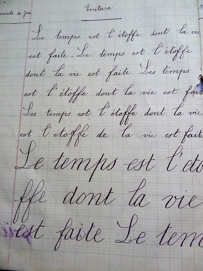
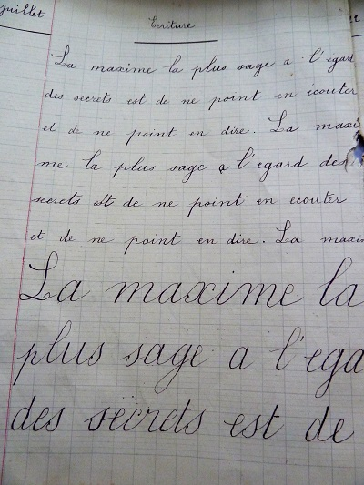

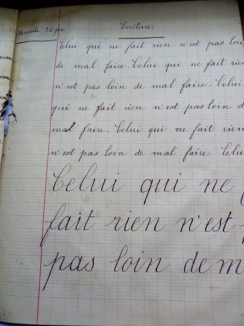
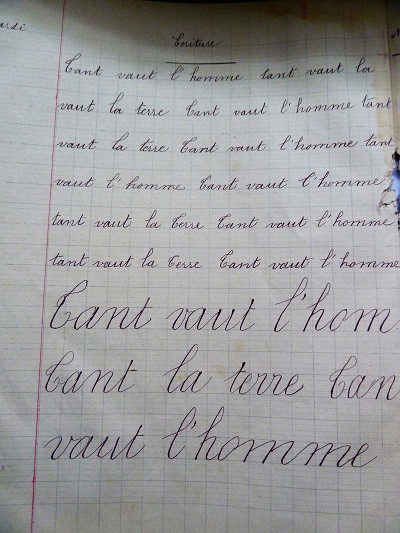
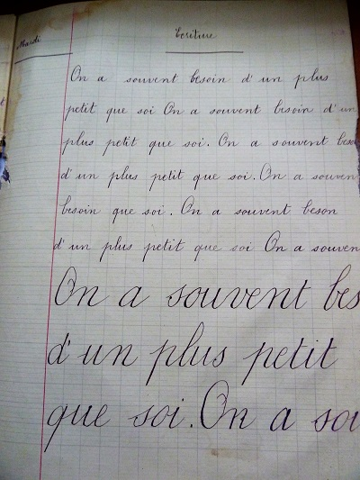
Le cahier du mardi d'Augustine, c'est le cahier d'écriture.
On y pratique la belle écriture en cursives, et on y répète à longueur de lignes les maximes et vertus des enfants sages
A coeur vaillant, rien d'impossible !
Tant vaut l'homme, tant vaut la terre !
L'obéissance est la plus belle vertu des enfants !...
Le second livre, c'est le Précis d'Histoire Sainte. Là encore, un livre rempli d'histoires et de gravures, de l'Ancien Testament au Nouveau Testament.
C'est sans doute plus agréable à lire que les saints évangiles, mais attention chaque chapitre est clos par une série d'exercices de révision.
Suffit-il, pour obtenir de Dieu le pardon de nos fautes, de les confesser et même de dire que nous les regrettons? Montrez, par un exemple tiré de l'Histoire Sainte, qu'il faut quelque chose de plus.
Montrez, par un exemple emprunté à l'Histoire Sainte, que la jalousie est un vice fort dangereux.
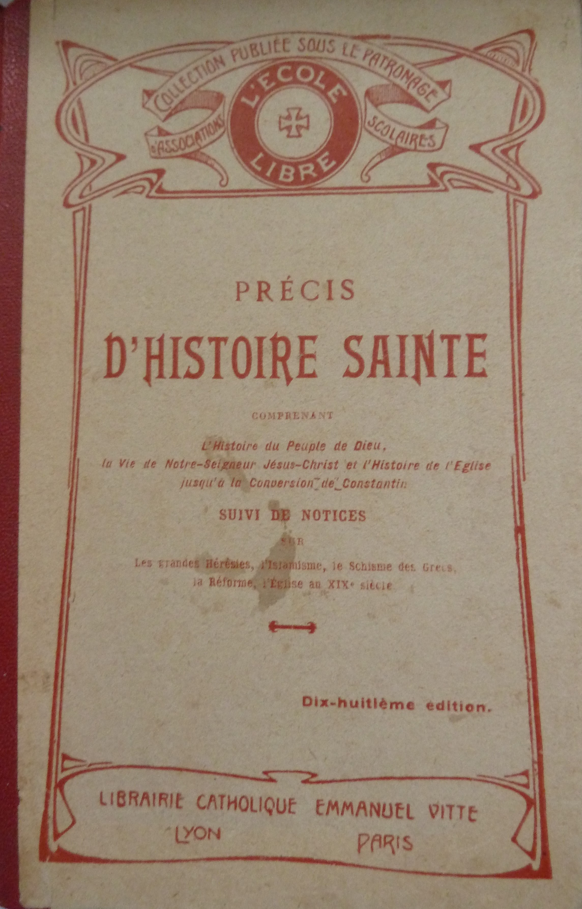


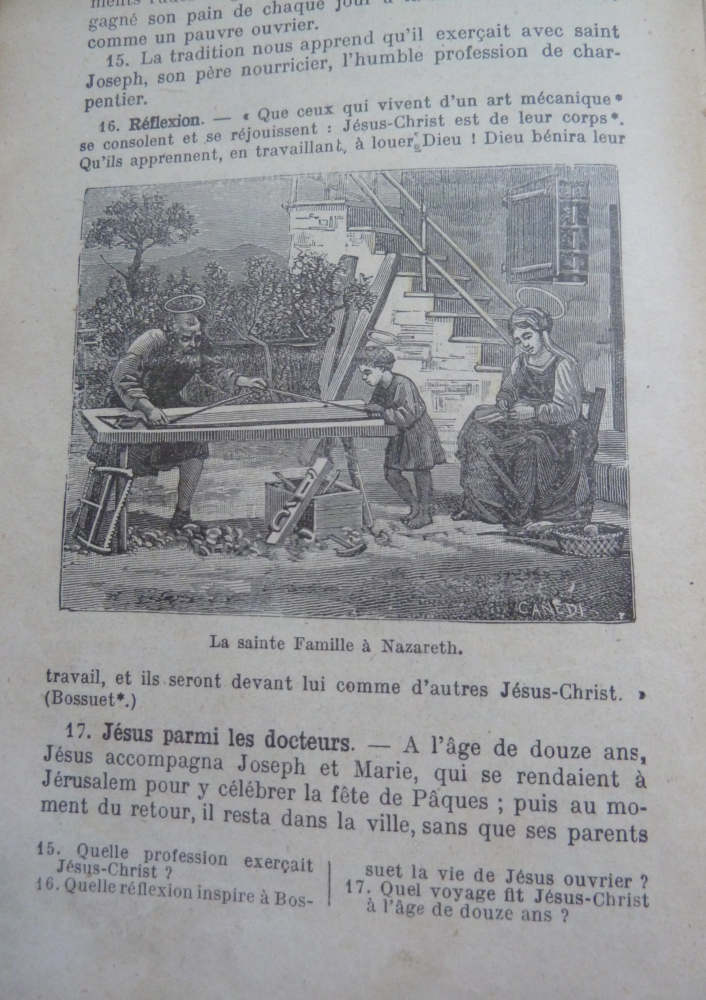

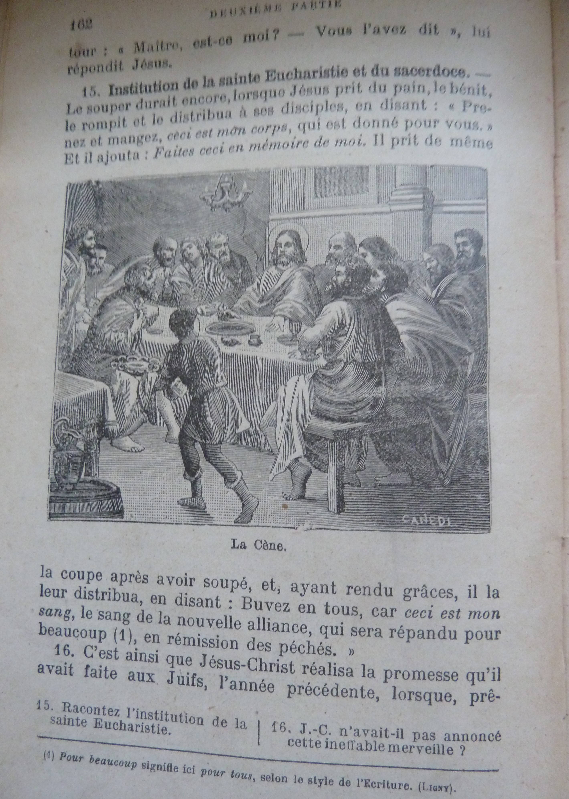